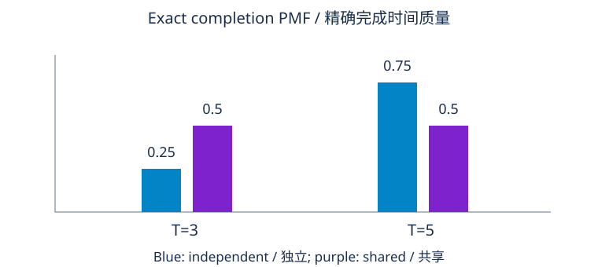

项目约定与必交材料
构建依赖规划器，返回优先顺序证书、最早完成时间与关键路径，或拒绝无效数据并给环见证。使用八任务，含菱形依赖和孤立任务。模型有无限并行工作者、无传输延迟和资源竞争。边 u→v 表示 u 完成后 v 才可开始；输入列直接前驱，不预先列传递闭包。任务从零时刻可用，只受依赖约束。
十四小时核心分为说明两小时、证明四小时、实现四小时、量化报告四小时。这是项目，不是另一课十四练习。提交七项可分别检查的材料：
- 一页输入输出约定，含无效、空输入。
- 带标签图和对应输入表。
- 独立 Python 实现及复现命令。
- 对实际循环的顺序、终止和完成时间证明。
- 操作计数与明确算术模型的内存分析。
- 精确和模拟离散工期律，包含相关性比较。
- 简短报告、故障证据与评分自评。
下方参考及实际输出构成完整解法。先自己写约定、预测输出，再比较参考。匹配一条打印顺序不够，因为拓扑序可多条；检查每边、递推、闭环见证和模型条件。
阶段 1 · 说明与建模 · 2 小时
输入为任务字典列表，恰有 id、duration、requires。ID 是唯一 ASCII 字符串，首字母后最多 31 个字母数字下划线。工期为正有限 Python int 或 float，拒绝 Boolean。前驱列表是已知且不重复 ID。遍历前拒绝未知前驱和重复记录；自依赖是环。空输入返回空顺序、时间映射和路径，总工期零。
CPU 参考要求输入通过 math.isfinite，太大而不能检查的整数明确拒绝。整数样例时间由 Python 精确计算；浮点工期会舍入，完成溢出为错误，不接受无穷时间。下方证明采用精确实数，报告需指出数值边界。验证复制前驱列表，避免之后偶然修改改变遍历中的图。
| 任务 | 工期 | 直接前驱 | 角色 |
|---|---|---|---|
| A | 2 | 无 | 菱形根 |
| B | 3 | A | 第一分支 |
| C | 4 | A | 更长分支 |
| D | 2 | B,C | 汇合 |
| E | 1 | D | 下游准备 |
| F | 2 | E | 下游工作 |
| G | 5 | 无 | 孤立任务 |
| H | 3 | F | 最后任务 |
用输入顺序解决平局：FIFO 就绪队列、首个最大前驱构建路径，无需堆或字典序排序。这给复现，不使数学拓扑序唯一。你可另选规则，但应修订约定与复杂度。
标出最长路径 A→C→D→E→F→H，孤立 G 仍计入总完成时间。
D 前驱全完成，但只一个工作者空闲，本模型因其他任务占用工作者而延迟 D 吗？
查看答案
不会。这里工作者无限；有限资源需另一调度模型和额外状态、约束。
阶段门槛：重建七条边，写空结果，以及 X→Y→Z→X 环样例，再开始实现。
阶段 2 · 推导与证明 · 4 小时
维护 indegree 等于尚未移除顶点发来的入边数，按前驱初始化，全部零入度入队。移除 v 后追加顺序，并对各后继计数减一；降零时后继入队。这是简单图约定下 Kahn 算法；静默容许重复前驱会改变计数证明义务。
移除 v 时没有未移除前驱，所以每前驱已在前面。按移除次数归纳，证明每输出边 position(u)<position(v)。每顶点至多入队一次，每迭代移除新顶点，有限图保证终止。DAG 必全部移除：任何非空剩余无环图有零入度顶点，模块 06 通过沿前驱追踪、排除重复证明。
若提前停，剩余每顶点有剩余前驱，沿前驱走有限步重复，证明存在环。剩余顶点可能只是环下游，整个剩余列表不是环见证。参考用迭代着色 DFS 保存活动路径及位置；指向活动顶点的边闭合路径段，给真实有向环。见证首尾相同，逐相邻边检查。
证明义务与时间递推
有效序上 F(v)=d(v)+max_(u→v)F(u)，空最大零，开始时间是该最大。不是前驱工期总和：独立分支可并行。样例 F(A)=2,B=5,C=6,D=8,E=9,F=11,G=5,H=14。一条序 A,G,B,C,D,E,F,H，时间不依有效序选择。
按序归纳：无前驱从零开始；一般 v 不可能早于最晚前驱完成。归纳中前驱已达下界，无限工作者允许 v 在最大时间开始、不延迟其他任务。递推既是下界，又能实现，故是最早完成；最大 F 为模型最早总工期。
记达到最大值的前驱，从总最大终点倒追，再反转，得到有向关键路径。递推反复代入证明其工期和为 T。任意可行调度至少花任意依赖路径工期，因此给下界证书。平局可能多关键路径，返回一条即可；空任务单独约定空路径，不能对空集 argmax。
入度不变量证明顺序；完成时间归纳与最长路径证书证明工期。
阶段门槛：用自己的文字提交证明，指出代码何行初始化、保持、使用不变量。“Kahn 是标准算法”不替代和边约定一致的证明。
阶段 3 · 实现与挑战 · 4 小时
参考规划器与约定案例
Python 3.11+，无数值包。检查字典和 CycleError 见证。六无效例测试重复 ID、缺前驱、零工期、NaN、Boolean 及重复前驱。断言空输入、精确时间、每边顺序和每环边。扩展自环、环带下游尾、无效 ID 与能暴露递归深度限制的长链。
下载 lab1_verified_dependency_planner.py
"""Reference planner: simple prerequisite edges, unlimited parallel workers.
An input list preserves deterministic tie order. Validation rejects rather than
silently repairing duplicates. Critical-path proofs use exact real durations;
the reference fixture uses integers so its calculations are exact in Python.
"""
from collections import deque
import math
import re
class CycleError(ValueError):
def __init__(self, witness):
self.witness = witness
super().__init__('cycle: '+' -> '.join(witness))
def cycle_witness(children):
colour = {v: 0 for v in children}
for start in children:
if colour[start]:
continue
path, positions = [start], {start: 0}
colour[start] = 1
stack = [(start, iter(children[start]))]
while stack:
v, iterator = stack[-1]
try:
child = next(iterator)
except StopIteration:
colour[v] = 2
stack.pop()
positions.pop(v)
path.pop()
continue
if colour[child] == 1:
return path[positions[child]:]+[child]
if colour[child] == 0:
colour[child] = 1
positions[child] = len(path)
path.append(child)
stack.append((child, iter(children[child])))
return []
def plan(tasks):
if not isinstance(tasks, list):
raise ValueError('tasks must be a list')
durations, predecessors = {}, {}
for task in tasks:
if not isinstance(task, dict) or set(task) != {'id','duration','requires'}:
raise ValueError('each task needs exactly id,duration,requires')
v, duration, requires = task['id'], task['duration'], task['requires']
if not isinstance(v, str) or not re.fullmatch(r'[A-Za-z][A-Za-z0-9_]{0,31}', v) or v in durations:
raise ValueError('invalid or duplicate task id')
if isinstance(duration, bool) or not isinstance(duration, (int,float)):
raise ValueError('duration must be a positive finite number')
try:
finite = math.isfinite(duration)
except OverflowError:
finite = False
if not finite or duration <= 0:
raise ValueError('duration must be a positive finite number')
if not isinstance(requires,list) or any(not isinstance(u,str) for u in requires) or len(set(requires)) != len(requires):
raise ValueError('requires must be a list of distinct ids')
durations[v], predecessors[v] = duration, requires[:]
children = {v: [] for v in durations}
for v, before in predecessors.items():
for u in before:
if u not in durations:
raise ValueError('missing prerequisite: '+u)
children[u].append(v)
indegree = {v: len(predecessors[v]) for v in durations}
ready = deque(v for v in durations if indegree[v] == 0)
order = []
while ready:
v = ready.popleft()
order.append(v)
for child in children[v]:
indegree[child] -= 1
if indegree[child] == 0:
ready.append(child)
if len(order) != len(durations):
witness = cycle_witness(children)
assert witness and witness[0] == witness[-1]
assert all(b in children[a] for a,b in zip(witness,witness[1:]))
raise CycleError(witness)
finish, parent = {}, {}
for v in order:
before = predecessors[v]
parent[v] = max(before, key=finish.__getitem__) if before else None
start = finish[parent[v]] if before else 0
try:
finish[v] = start+durations[v]
except OverflowError as error:
raise ValueError('completion-time arithmetic overflow') from error
if isinstance(finish[v], float) and not math.isfinite(finish[v]):
raise ValueError('completion-time arithmetic overflow')
endpoint = max(order, key=finish.__getitem__) if order else None
path = []
while endpoint is not None:
path.append(endpoint)
endpoint = parent[endpoint]
return {'order':order, 'finish':finish, 'critical_path':path[::-1], 'makespan':max(finish.values(),default=0)}
TASKS = [
{'id':'A','duration':2,'requires':[]},
{'id':'B','duration':3,'requires':['A']},
{'id':'C','duration':4,'requires':['A']},
{'id':'D','duration':2,'requires':['B','C']},
{'id':'E','duration':1,'requires':['D']},
{'id':'F','duration':2,'requires':['E']},
{'id':'G','duration':5,'requires':[]},
{'id':'H','duration':3,'requires':['F']},
]
result = plan(TASKS)
positions = {v:i for i,v in enumerate(result['order'])}
assert all(positions[u]<positions[t['id']] for t in TASKS for u in t['requires'])
assert result['makespan'] == 14 and result['critical_path'] == ['A','C','D','E','F','H']
print('order:', result['order'])
print('finish:', result['finish'])
print('critical path:', result['critical_path'], '; makespan:', result['makespan'])
assert plan([]) == {'order':[], 'finish':{}, 'critical_path':[], 'makespan':0}
print('empty input: valid empty plan, makespan zero')
cycle = [{'id':'X','duration':1,'requires':['Z']},{'id':'Y','duration':1,'requires':['X']},{'id':'Z','duration':1,'requires':['Y']}]
try:
plan(cycle)
raise AssertionError('cycle accepted')
except CycleError as error:
print('cycle witness:', error.witness)
invalid = [
TASKS+[TASKS[0].copy()],
[{'id':'A','duration':1,'requires':['missing']}],
[{'id':'A','duration':0,'requires':[]}],
[{'id':'A','duration':float('nan'),'requires':[]}],
[{'id':'A','duration':True,'requires':[]}],
[{'id':'A','duration':1,'requires':[]},{'id':'B','duration':1,'requires':['A','A']}],
]
for case in invalid:
try:
plan(case)
raise AssertionError('invalid input accepted')
except ValueError:
pass
print('six contract fault cases rejected; edge/order and closed-cycle witnesses checked')
order: ['A', 'G', 'B', 'C', 'D', 'E', 'F', 'H']
finish: {'A': 2, 'G': 5, 'B': 5, 'C': 6, 'D': 8, 'E': 9, 'F': 11, 'H': 14}
critical path: ['A', 'C', 'D', 'E', 'F', 'H'] ; makespan: 14
empty input: valid empty plan, makespan zero
cycle witness: ['X', 'Y', 'Z', 'X']
six contract fault cases rejected; edge/order and closed-cycle witnesses checked
操作计数与内存
单位成本哈希模型中，映射邻接构建 O(V+E) 期望字典集合操作。Kahn 移除 V 顶点、检查 E 出边；时间遍历每前驱边一次，路径最多 V 父指针，环 DFS 最多 V 顶点 E 边。因此相关图遍历 O(V+E)，存图 O(V+E)、遍历状态 O(V)。迭代栈避免 Python 递归限制。
ID 解析、数值位长、哈希病态和序列化并非自动单位成本。ID 有界、小工期时模型有用，任意大整数需位成本。规范 checksum 排序是额外工作，不能藏进整体线性声称。实验 3 对链精确计移除和边检查，不以单次时间替代渐近证明。
教学校验和与必需故障诊断
按 ID 和前驱排序规范记录、确定键序列化，ASCII 字节和模 257，连接模块 07 模运算和数据表示。等价记录顺序故意同校验和，不认证队列平局顺序。一个数字改动可改和，补偿改动可保留。匹配不保证完整性、真实性或数据有效。
参考先把 A 工期 1→2，校验和改变，再把 B 2→1，使校验和回原值，记录却不同。工期都有效，是具体碰撞。独立检查输入及数学输出证书。有限余数且更多可能输入，抽屉原理也保证碰撞存在。
下载 lab3_checksum_counts_and_worker_limits.py
"""Educational byte checksum, operation counts and scheduling scope faults."""
from collections import deque
from copy import deepcopy
import json
def checksum(tasks):
canonical = sorted((dict(t, requires=sorted(t['requires'])) for t in tasks),key=lambda t:t['id'])
payload = json.dumps(canonical,sort_keys=True,separators=(',',':'),ensure_ascii=True).encode('ascii')
return sum(payload)%257
tasks = [{'id':'A','duration':1,'requires':[]},{'id':'B','duration':2,'requires':[]}]
corrupt = deepcopy(tasks)
corrupt[0]['duration'] = 2
collision = deepcopy(corrupt)
collision[1]['duration'] = 1
print('original/single-change/compensating-change checksums:', checksum(tasks),checksum(corrupt),checksum(collision))
assert checksum(tasks) != checksum(corrupt)
assert checksum(tasks) == checksum(collision) and tasks != collision
print('checksum detects this single change, but accepts this deliberate collision; no integrity guarantee')
for n in (10,100,1000):
children = {i:[i+1] if i+1<n else [] for i in range(n)}
indegree = [0]+[1]*(n-1)
ready = deque([0])
removed = inspected = 0
while ready:
v = ready.popleft()
removed += 1
for child in children[v]:
inspected += 1
indegree[child] -= 1
if indegree[child] == 0:
ready.append(child)
assert removed == n and inspected == n-1
print(f'chain V={n},E={n-1}: popped={removed},edge inspections={inspected}')
print('canonical checksum sorting is additional work; it is not included in the linear graph-pass count')
print('three independent tasks of duration two: unlimited workers=2; one worker=6; two workers=4')
print('topological order is a precedence certificate, not a unique order or a fixed-worker optimal schedule')
original/single-change/compensating-change checksums: 132 133 132
checksum detects this single change, but accepts this deliberate collision; no integrity guarantee
chain V=10,E=9: popped=10,edge inspections=9
chain V=100,E=99: popped=100,edge inspections=99
chain V=1000,E=999: popped=1000,edge inspections=999
canonical checksum sorting is additional work; it is not included in the linear graph-pass count
three independent tasks of duration two: unlimited workers=2; one worker=6; two workers=4
topological order is a precedence certificate, not a unique order or a fixed-worker optimal schedule
规范字节连接模和，补偿修改保留余数。
阶段门槛：空输入、环和每请求故障给实际证据；解释碰撞及计数范围。
阶段 4 · 量化与报告 · 4 小时
精确与模拟工期模型
四任务菱形 A→B,C→D，A、D 各一，B、C 各以半概率取一或三。独立联合四种各 1/4，T=2+max(B,C)，P(T=3)=1/4、P(T=5)=3/4，期望 9/2、方差 3/4。Fraction 权重做精确枚举，不能称浮点和为符号精确。
共享延迟只抽一次、令 B=C，相同边际却联合仅 (1,1)、(3,3) 各半。T 在三、五各半，均值四、方差一。这说明依赖必须建模，不声称所有依赖都向同一方向改最大值。
边际均值代递推为 1+max(2,2)+1=4，独立期望完成却 4.5。一般 E[max(B,C)]≥max(E B,E C)，因 max 至少各参数，本例严格。因此平均工期的确定计划通常不等于随机总工期的期望。先枚举或模拟相同联合律。
每模型 20,000 独立模拟重复，random.Random 种子 31031/31032。已知律 MC SE=sqrt(Var(T)/N)，测均值模拟误差，不是单次项目工期离散程度。T∈[3,5] 给每模型 95% Hoeffding 半径 2sqrt(log40/(2N))≈.019206；分别保证，不称同时 95%。伪随机程序示意理想抽样，精确枚举为参考。
下载 lab2_exact_and_simulated_durations.py
"""Exact finite diamond law and simulation of the SAME duration models."""
import argparse
from collections import Counter
from fractions import Fraction
from itertools import product
import math
from pathlib import Path
import random
# A and D last one unit; B,C last one or three with equal marginal probability.
independent = Counter()
for b,c in product((1,3),repeat=2):
independent[1+max(b,c)+1] += Fraction(1,4)
shared = {3:Fraction(1,2),5:Fraction(1,2)}
def moments(pmf):
mean = sum(t*p for t,p in pmf.items())
return mean, sum(p*(t-mean)**2 for t,p in pmf.items())
N = 20000
print('exact independent PMF:', dict(sorted(independent.items())))
print('exact shared-delay PMF:', shared)
for name, pmf, seed in [('independent',independent,31031),('shared',shared,31032)]:
mean, variance = moments(pmf)
rng = random.Random(seed)
observed = []
for _ in range(N):
b = rng.choice((1,3))
c = rng.choice((1,3)) if name == 'independent' else b
observed.append(1+max(b,c)+1)
estimate = sum(observed)/N
se = math.sqrt(float(variance)/N)
radius = 2*math.sqrt(math.log(2/.05)/(2*N)) # range 5-3, IID simulation replicates
print(f'{name}: exact mean={mean}; variance={variance}; MC mean={estimate:.6f}; known-law SE={se:.6f}; Hoeffding 95% radius={radius:.6f}; seed={seed}')
assert abs(estimate-float(mean)) < radius
print('recurrence at marginal means:', 1+max(2,2)+1, '; expected independent completion:', moments(independent)[0])
parser = argparse.ArgumentParser()
parser.add_argument('--output')
args = parser.parse_args()
if args.output:
drawing = '<svg xmlns="http://www.w3.org/2000/svg" viewBox="0 0 760 340" role="img" aria-label="Exact independent and shared duration masses at completion times three and five"><rect width="760" height="340" fill="white"/><g font-family="system-ui" fill="#1a2e4a"><text x="380" y="30" text-anchor="middle" font-size="20">Exact completion PMF / 精确完成时间质量</text><path d="M70,70V270H700" fill="none" stroke="#64748b"/>'
for i,t in enumerate((3,5)):
x = 180+i*300
for offset,pmf,colour,label in [(0,independent,'#0284c7','independent / 独立'),(65,shared,'#7e22ce','shared / 共享')]:
mass = float(pmf[t])
drawing += f'<rect x="{x+offset}" y="{270-220*mass}" width="50" height="{220*mass}" fill="{colour}"/><text x="{x+offset+25}" y="{255-220*mass}" text-anchor="middle" font-size="18">{mass:g}</text>'
drawing += f'<text x="{x+55}" y="300" text-anchor="middle" font-size="20">T={t}</text>'
drawing += '<text x="380" y="333" text-anchor="middle" font-size="17">Blue: independent / 独立; purple: shared / 共享</text></g></svg>'
Path(args.output).write_text(drawing,encoding='utf-8')
exact independent PMF: {3: Fraction(1, 4), 5: Fraction(3, 4)}
exact shared-delay PMF: {3: Fraction(1, 2), 5: Fraction(1, 2)}
independent: exact mean=9/2; variance=3/4; MC mean=4.485700; known-law SE=0.006124; Hoeffding 95% radius=0.019206; seed=31031
shared: exact mean=4; variance=1; MC mean=3.989500; known-law SE=0.007071; Hoeffding 95% radius=0.019206; seed=31032
recurrence at marginal means: 4 ; expected independent completion: 9/2

相同工期边际，不同完成律：独立 .25/.75，共享 .5/.5。
阶段门槛：报告两精确律、模拟均值、抽样单位、SE 和界解释。随机工期不改变固定图操作数；图本身随机是另一个输入模型。
提交附录与答辩
报告建议英文约 1,200–1,800 词，中文写相当信息量，加代码、图表。含 schema、边方向、实数证明边界、不变量、关键路径追踪、无效与环输出、复杂度模型、碰撞、联合律枚举、MC 和工作者限制。记录 Python、命令、种子及样例更改；改参考则重跑输出。
答辩回答：就绪计数为何证前驱已移除？剩余为何含环但不全在环？汇合为何 max 非 sum？什么调度实现递推？碰撞为何否定完整性保证？E[max] 与 max(E) 为何不同？一、二工作者改变什么？
评分与结业条件
| 项目 | 权重 | 满分证据 |
|---|---|---|
| 建模约定 | 20% | 边方向、无限工作者、有效无效空 schema 和八任务。 |
| 正确性终止 | 25% | 入度保持、顺序证明、真实环证书及时间归纳。 |
| 实现诊断 | 20% | 可运行输出、必需故障及具体碰撞。 |
| 复杂度不确定性 | 20% | 相关线性遍历、联合 PMF、模拟误差及依赖。 |
| 沟通复现 | 15% | 数学追踪、版本命令种子及限制。 |
逐项按权重打分并指材料。推荐至少 80/100，不可缺正确性证明或不确定性解释。高总分不能补这些缺失；参考执行成功不等于学习者已完成提交。
保存答辩与选学拓展
查看答案
完整答辩把剩余前驱入度连接每输出边，给真实闭环，归纳证最早时间和无限工作者实现，追路径总和 14。碰撞说明校验和不足。独立共享精确均值 4.5/4，模拟 SE 测均值估计误差，有限工作者需另加调度约束。
选学加工作者限制和可行策略，说明关键路径递推仍是下界却不决定完整调度。三项独立两单位任务：无限工人完于二，一工人六，两工人四。模块 20 后可写优先、容量约束；启发输出与最优性声明分开。本拓展不含十四小时核心。
阅读与下一步
重访 04、06、07、08、21、24 的归纳、图、模运算、复杂度、有限概率和 MC 界。本项目实际推导递推及证书。回到课程概览，AI 项目整合数值学习路线。